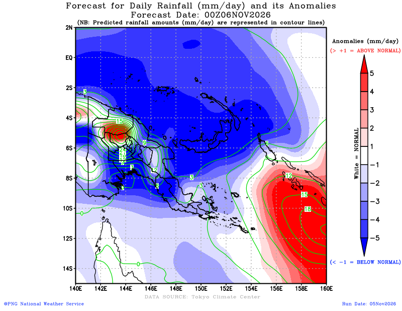
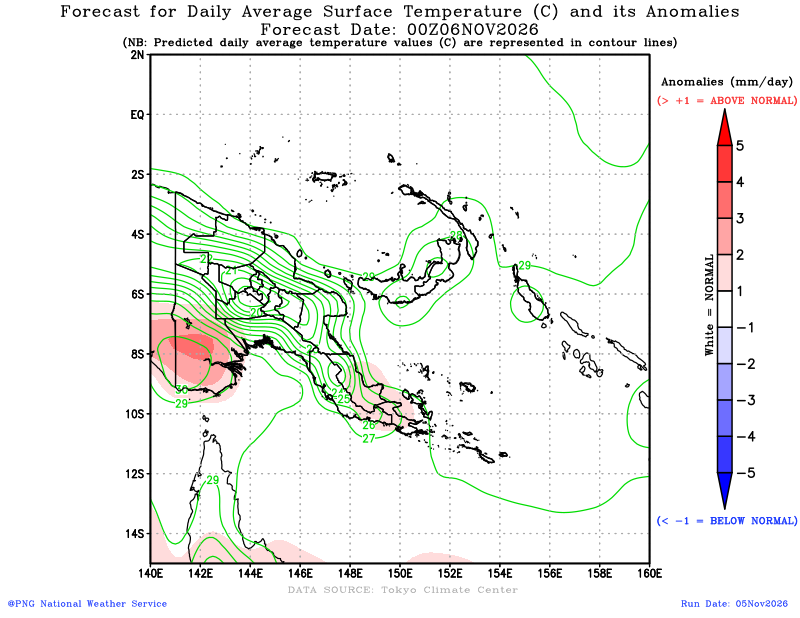
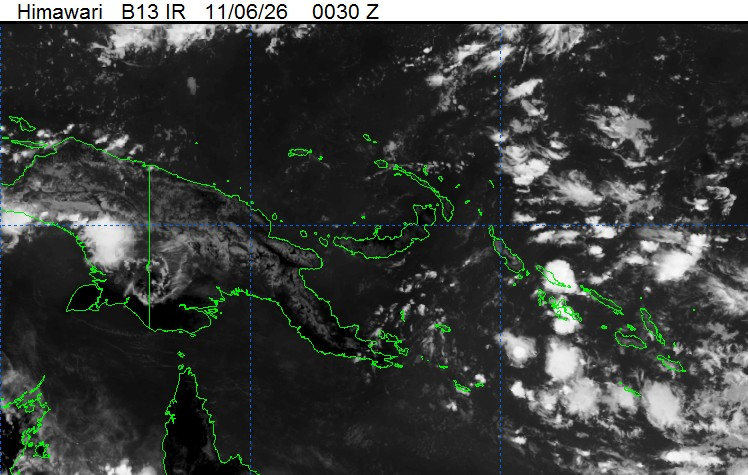
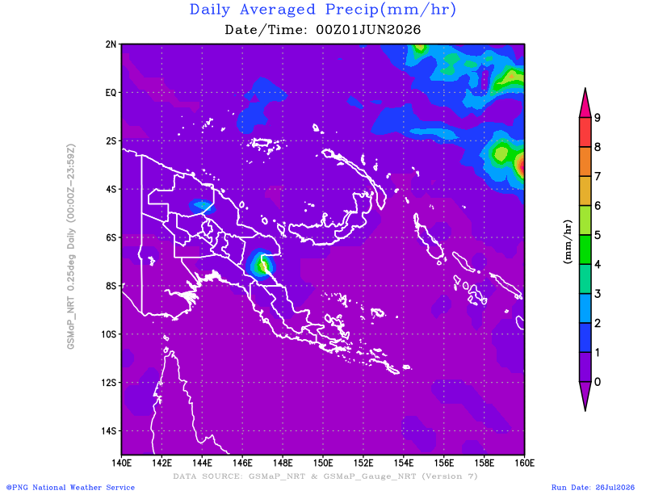

ADAPt
ADAPtWhat is ADAPt?
ADAPt is FAO Papua New Guinea’s public early-warning dashboard for El Niño-related agricultural drought risk. It is built around the Combined Drought Index (CDI), developed by FAO together with PNG’s National Weather Service (NWS), which combines six climate, rainfall, soil-moisture and vegetation signals into one score from 0 to 1 every month.
Use this tab to understand how the CDI is calculated. The Overview tab gives the national picture, and the Province, District and LLG tabs each have their own interactive map and table.
About the Combined Drought Index (CDI)
The Combined Drought Index (CDI) assesses drought severity and triggers anticipatory action, complementing the National Weather Service’s existing Drought Early Warning System. It is based on published research (Isaev E, Yuave N, Inape K, Jones C, Dawa L & Sidle RC, 2024, Agricultural Drought-Triggering for Anticipatory Action in Papua New Guinea, Water 16, 2009) and is calculated every month from free, open data sources.
One score from 0 to 1 for every province, district and LLG
Each signal raises a flag: none, half or full. Flags are weighted and added up. The higher the score, the stronger the warning.
Technical details: data sources and flag rules
| Indicator | Source | Flag rule | Weight |
|---|---|---|---|
| ENSO (Relative Niño3.4) | NOAA | 0.5 if alert, 1 if declared | 20% |
| Indian Ocean Dipole (DMI) | NOAA | 0.5 if alert, 1 if declared | 10% |
| Present rainfall (SPI-1) | CHIRPS, Climate Hazards Center (UCSB) | 0.5 if -0.5≤SPI<0, 1 if SPI<-0.5 | 20% |
| Present soil moisture | ERA5-Land, ECMWF | 0.5 if 5-15% below normal, 1 if >15% | 20% |
| Present vegetation health | FAO ASIS | 0.5 if VHI<0.4, 1 if VHI<0.3 | 10% |
| Forecast rainfall (SPI-3) | ECMWF SEAS5 | 0.5 if -1≤SPI<0, 1 if SPI<-1 | 20% |
Phase bands: FAO PNG Food Security & Agriculture Sectoral Plan (Aug 2026), Table 1. The CDI shows where climate signals are converging strongly enough to warrant action. It does not by itself confirm crop failure or food insecurity; field verification and livelihood and market evidence decide the scale and type of response.
PNG Combined Drought Index (CDI) (interactive — click a province)
Loading latest CDI period…
Linked: picking a province here (on the map or in either dropdown) also updates the two charts below. Hover for a quick reading; the Province, District and LLG tabs go further.
Select a province
Click a province on the map.
Recent CDI components: …
Historical CDI record: … (rebuilt back to 1996)
The historical CDI record for any province can be used to inform and calibrate anticipatory-action thresholds. Dashed line marks CDI 0.6, the Anticipatory Action threshold (see phase bands above).
National drought picture
Loading the latest CDI…
Loading fire activity from PNG Fire Watch…
Provinces ranked by CDI
Change since last month
Climate drivers
El Niño and the Indian Ocean Dipole are national signals, so they add the same amount to every province.
National average CDI over time
Average of the 22 provincial CDI values each month. Dashed lines mark the Response (0.80) and Anticipatory Action (0.60) thresholds.
People by CDI phase
NSO 2024 census population, grouped by the phase of the LLG each person lives in.
CDI by province
This is the official monthly CDI for each province, calculated from province-average inputs. Phases: Response 0.80 and above, Anticipatory Action 0.60–0.79, Readiness 0.40–0.59.
Click an area on the map, or pick one above, to see its details. Use the layer button (top right) to switch the base map or show the ~5 km CDI pixels.
Select a province
Click an area on the map, pick one above, or choose a row in the table.
All provinces
CDI by district
Each district shows the average of the ~5 km CDI pixels inside its boundary. Half of the CDI (El Niño, Indian Ocean and the rainfall forecast) is the same across a whole province, so differences between districts come from rainfall, soil moisture and vegetation. Use this to decide where to look first, not as an exact local value. Boundaries: PNG NSO 2011 census (87 districts). Population: NSO 2024 census.
Click an area on the map, or pick one above, to see its details. Use the layer button (top right) to switch the base map, show province boundaries or show the ~5 km CDI pixels.
Select a district
Click an area on the map, pick one above, or choose a row in the table.
All districts
CDI by LLG
Each Local-Level Government (LLG) shows the average of the ~5 km CDI pixels inside its boundary. Very small or island LLGs cover only a few pixels, so treat their values with care. Boundaries: PNG NSO 2011 census (326 LLGs). Population: NSO 2024 census.
Click an area on the map, or pick one above, to see its details. Use the layer button (top right) to switch the base map, show province boundaries or show the ~5 km CDI pixels.
Select an LLG
Click an area on the map, pick one above, or choose a row in the table.
All LLGs
When drought turns to fire
Loading fire activity…
The CDI tells us where land is drying out. Dry soils and stressed vegetation are what let fires start and spread, so this tab follows the same provinces and districts from drought to fire. Fire alerts are satellite detections of heat (NASA VIIRS), not confirmed fires or burnt area.
Loading fire points… Glowing yellow points are alerts from the last 7 days; orange points are earlier this season. Shade the areas by fire compared with the 2012–2025 average, by drought (CDI), or switch shading off.
This season against every season since 2012
Alerts for the same weeks of each year. 2015 (El Niño) is shown in brown.
Drought and fire, province by province
Each bubble is a province, coloured by its CDI and sized by its number of alerts. Click one to see it on the map.
All areas
Take the fire data with you
Reports, maps and data from PNG Fire Watch, plus tables that put each area’s drought (CDI) and fire side by side. Files open from PNG Fire Watch in a new tab.
The full PNG Fire Watch
Protected areas and Key Biodiversity Areas, intact and primary forest layers, 22 province PDF reports, maps and data downloads. Updated twice a day.
CDI-based response guidance
The Combined Drought Index (CDI) phase is ADAPt's primary, government-endorsed trigger for anticipatory action — see the Province, District and LLG tabs for each area's current phase.
| CDI phase | Recommended action |
|---|---|
| Readiness CDI 0.40–0.59 | Maintain preparedness while supporting higher-phase operations elsewhere. |
| Anticipatory Action CDI 0.60–0.79 | Activate/scale anticipatory action now; complete field verification and prioritize hotspots. |
| Response threshold CDI 0.80–1.00 | Urgently verify severity and impacts; transition to response only where the CDI signal and field evidence converge. |
Field verification checklist
| Check | What to collect | Who can verify |
|---|---|---|
| Crop condition | Photos, GPS points, crop type, damage level, garden age and whether damage is drought-related or from another cause. | DAL/NARI officers, district agriculture officers, provincial teams and partner field teams. |
| Water availability | Water-source status, distance to water, quality concerns, low-flow or drying sources. | Provincial disaster offices, district teams, WASH partners and community focal points. |
| Food access | Meal changes, wild foods, market prices, shortages and coping mechanisms. | Provincial/district teams, partners and community key informants. |
| Hazard attribution | Separate drought stress from frost, pests, fire, flood or market shocks where possible. | Multi-sector assessment teams and technical specialists. |
Live Processing Workspace
Purpose of this tab: This section links to the separate Streamlit-based processing workspace used for live review, processing and export of climate-risk layers. It is separate from the main public briefing dashboard.
Embedded source: png-climate-workspace-v1.streamlit.app. If the embedded view does not load, use the button above to open the processing app directly.
PNGNWS Outlook
Official national reference: This tab links to public outlook and satellite products published by the PNG National Weather Service. These products complement the dashboard screening outputs and provide an official national forecast context for interpretation and briefing.
Official links open in a new tab. Preview images below are synced automatically into this dashboard on a schedule.
Forecast and imagery previews
Preview note: The previews below are mirrored automatically into this dashboard from public PNGNWS products. They refresh on a schedule so the tab remains stable without manual uploads.
31-Day Rainfall Preview (PNG domain)

PNG-domain daily rainfall forecast preview from the 31-day outlook.
31-Day Temperature Preview (PNG domain)

PNG-domain near-surface temperature forecast preview.
Himawari Satellite Preview

Quick-look infrared satellite frame from the PNGNWS Himawari page.
GSMaP Daily Rainfall Preview

Daily precipitation preview image available from the PNGNWS product stack.
How to use this tab
Use the seasonal and monthly forecast links to compare the official national outlook with the CDI for each province, district and LLG.
The satellite link can support rapid visual review of current cloud patterns and synoptic conditions, while Public Weather provides day-to-day national reference information.
Suggested interpretation
Use PNGNWS products as the official national forecast context, and use the CDI as the screening and prioritisation layer for provincial, district and LLG follow-up.
Where both the PNGNWS outlook and the dashboard indicators point in the same direction, confidence in follow-up targeting is stronger. Where they differ, additional technical review and field verification may be needed.
EarthMap
Purpose of this tab: EarthMap is a separate FAO geospatial platform for exploring contextual layers such as rainfall, vegetation condition, land cover, fire, surface water and other indicators relevant to drought and agricultural risk screening.
Embedded source: png.earthmap.org. If the embedded view is restricted by the external site, open EarthMap directly using the button above.
Generate a drought and fire report
What this does: compiles a detailed drought and fire briefing from ADAPt’s live data: the Combined Drought Index (CDI) by province, district and LLG, people living in each CDI phase, ENSO/IOD climate drivers and the CDI trend, plus this season’s fire alerts from PNG Fire Watch side by side with drought, into charts, tables and direct links to the underlying data and map layers. It runs entirely in your browser from the same public data files the rest of this dashboard uses, reflects whatever is published at the moment you click Generate, and is not saved or uploaded anywhere.